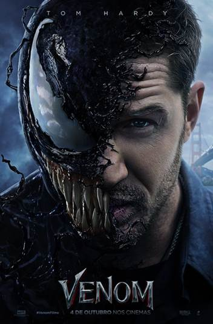

Aqui você encontra uma seleção dos melhore filmes de todos os tempos. Aproveite para conhecer e explorar os títulos que marcaram gerações, com suas histórias envolventes e atuações memoráveis.
| Filme | Imagem | Sinopse |
|---|---|---|
| My Hero Academia: You're Next | |
Em My Hero Academia - Agora é a Sua Vez, se passa após a épica batalha entre All Might (Kenta Miyake), o símbolo da paz, e All For One, o emblemático símbolo do mal, a era dos heróis toma um novo rumo. Embora All Might tenha se afastado do papel de herói número 1, seus ideais e legado permanecem vivos no coração de seus alunos da U.A. High School. Determinados a honrar sua influência, Deku, Bakugo, Todoroki e a classe 1-A se preparam para enfrentar um novo desafio: Dark Might e a sinistra organização criminosa conhecida como Família Gollini. À medida que se aprofundam nesse confronto, os jovens heróis precisam unir forças e superar suas próprias limitações, enquanto lutam para proteger a sociedade das sombras que ameaçam desestabilizá-la. Em meio a batalhas intensas e reviravoltas inesperadas, a turma da U.A. descobrirá o verdadeiro significado de heroísmo, responsabilidade e amizade. Com o peso do legado de All Might em suas costas, eles estão prontos para enfrentar o mal e reafirmar que, mesmo na escuridão, a luz dos heróis nunca se apaga. |
| Guardiões da Galáxia | |
Peter Quill (Chris Pratt) foi abduzido da Terra quando ainda era criança. Adulto, fez carreira como saqueador e ganhou o nome de Senhor das Estrelas. Quando rouba uma esfera, na qual o poderoso vilão Ronan, da raça kree, está interessado, passa a ser procurado por vários caçadores de recompensas. Para escapar do perigo, Quill une forças com quatro personagens fora do sistema: Groot, uma árvore humanóide (Vin Diesel), a sombria e perigosa Gamora (Zoe Saldana), o guaxinim rápido no gatilho Rocket Racoon (Bradley Cooper) e o vingativo Drax, o Destruidor (Dave Bautista). Mas o Senhor das Estrelas descobre que a esfera roubada possui um poder capaz de mudar os rumos do universo, e logo o grupo deverá proteger o objeto para salvar o futuro da galáxia. |
| Five Nights at Freddy's - O Pesadelo Sem Fim | |
Five Nights At Freddy's - O Pesadelo Sem Fim é a primeira adaptação cinematográfica da famosa franquia homônima de jogos lançada em 2014 e criada por Scott Cawthon. Dirigido por Emma Tammi (Terra Assombrada, Fair Chase), a história se passa em um restaurante familiar tipicamente americano chamado Freddy Fazbear's Pizza, que está atualmente desativado, e acompanha Mike Schmidt (Josh Hutcherson), um jovem que está passando por alguns problemas financeiros. Felizmente, ele vê a resposta para seus problemas ao ser contratado para trabalhar como o vigia noturno da pizzaria. Criado por Henry Emily e William Afton, o lugar costumava ser muito famoso por seus característicos robôs animados, que eram o rosto do local e faziam a festa das crianças durante o dia. Porém, quando o sol se põe e a escuridão da noite chega, um segredo obscuro e mortal é revelado: os bonecos animatrônicos ganham vida, transformando-se em assassinos psicopatas e partindo em uma violenta matança. |
| Shrek | |
Em um pântano distante vive Shrek (Mike Myers), um ogro solitário que vê, sem mais nem menos, sua vida ser invadida por uma série de personagens de contos de fada, como três ratos cegos, um grande e malvado lobo e ainda três porcos que não têm um lugar onde morar. Todos eles foram expulsos de seus lares pelo maligno Lorde Farquaad (John Lithgow). Determinado a recuperar a tranquilidade de antes, Shrek resolve encontrar Farquaad e com ele faz um acordo: todos os personagens poderão retornar aos seus lares se ele e seu amigo Burro (Eddie Murphy) resgatarem uma bela princesa (Cameron Diaz), que é prisioneira de um dragão. Porém, quando Shrek e o Burro enfim conseguem resgatar a princesa logo eles descobrem que seus problemas estão apenas começando. |
| Jurassic Park | |
Um parque construído por um milionário (Richard Attenborough) tem como habitantes dinossauros diversos, extintos a sessenta e cinco milhões de anos. Isto é possível por ter sido encontrado um inseto fossilizado, que tinha sugado sangue destes dinossauros, de onde pôde-se isolar o DNA, o código químico da vida, e, a partir deste ponto, recriá-los em laboratório. Mas, o que parecia ser um sonho se torna um pesadelo, quando a experiência sai do controle de seus criadores. |
| Os Sem-Floresta | |
A primavera chegou, o que faz com que os animais da floresta despertem da hibernação. Ao acordar eles logo têm uma surpresa: surgiu ao redor de seu habitat natural uma grande cerca verde. Inicialmente eles temem o que há por detrás da cerca, até que RJ (Bruce Willis) revela que foi construída uma cidade ao redor da floresta em que vivem, que agora ocupa apenas um pequeno espaço. RJ diz ainda que no mundo dos humanos há as mais diversas guloseimas, convencendo os demais a atravessar a cerca. Entretanto esta atitude desagrada o cauteloso Verne (Garry Shandling), que achava melhor permanecer onde estavam inicialmente. |
| O Touro Ferdinando | |
Ferdinando é um touro com um temperamento calmo e tranquilo, que prefere sentar-se embaixo de uma árvore e relaxar ao invés de correr por aí bufando e batendo cabeça com os outros. A medida que vai crescendo, ele se torna forte e grande, mas com o mesmo pensamento. Quando cinco homens vão até sua fazenda para escolher o melhor animal para touradas em Madri, Ferdinando é selecionado acidentalmente. |
| Homem-Aranha no Aranhaverso | |
Em Homem-Aranha no Aranhaverso, Miles Morales é um jovem negro do Brooklyn que se tornou o Homem-Aranha inspirado no legado de Peter Parker, já falecido. Entretanto, ao visitar o túmulo de seu ídolo em uma noite chuvosa, ele é surpreendido com a presença do próprio Peter, vestindo o traje do herói aracnídeo sob um sobretudo. A surpresa fica ainda maior quando Miles descobre que ele veio de uma dimensão paralela, assim como outras versões do Homem-Aranha. |
| Homem-Aranha: Através do Aranhaverso | |
Homem-Aranha: Através do Aranhaverso, é a continuação do vencedor do Oscar Homem-Aranha: No Aranhaverso, de 2018, que acompanha Miles Morales (Shameik Moore), o simpático Homem-Aranha do Brooklyn. Neste novo capítulo, Miles está de volta para uma nova missão em sua agitada vida como super herói. No novo filme, Morales é transportado para uma aventura épica através do multiverso, e deve unir forças com a mulher-aranha Gwen Stacy (Hailee Steinfeld) e um novo time de Pessoas-Aranha, formado por heróis de diversas dimensões. No entanto, tudo muda quando os heróis entram em conflito sobre como lidar com uma nova ameaça, e Miles se vê em um impasse. E para piorar ainda mais a situação, eles precisam enfrentar um vilão muito mais poderoso do que qualquer coisa que já tenham encontrado antes. Agora, para salvar as pessoas que ele mais ama no mundo, Miles deve redefinir o que significa ser um super herói. |
| One Piece Film: Red | |
Uta - a cantora mais amada do mundo. Sua voz, com a qual ela canta enquanto esconde sua verdadeira identidade, foi descrita como "de outro mundo". Ela aparecerá em público pela primeira vez em um show ao vivo. Enquanto o local se enche de todos os tipos de fãs de Uta - piratas animados, a Marinha assistindo de perto e os Chapéus de Palha liderados por Luffy que simplesmente vieram para curtir sua performance sonora - a voz que o mundo inteiro estava esperando está prestes a ressoar. A história começa com o fato chocante de que ela é "filha de Shanks". |
| Gato de Botas | |
Muito antes de conhecer o ogro Shrek e sua turma, Gato de Botas (Antonio Banderas) vai viver uma grande aventura ao lado de Humpty Dumpty (Zach Galifianakis) e Kitty Pata Mansa (Salma Hayek). Dipostos a roubar os feijões mágicos do casal fora da lei Jack (Billy Bob Thornton) e Jill (Amy Sedaris), o trio quer mesmo é botar as mãos na famosa gansa que bota ovos de ouro. Mas algumas coisas não estavam nos planos e Gato vai descobrir, meio atrasado, que tem um grande problema pela frente para conseguir limpar o que ficou para trás: a sua honra. |
| My Hero Academia: Heroes Rising | |
Após os eventos da 4ª temporada, Izuku Midoriya e Katsuki Bakugo passam de lutar um contra o outro para lutar lado a lado enquanto enfrentam a maior ameaça que ousa dominar o domínio: NOVE, o vilão mais forte de todos os tempos |
| Venom |  | Em Venom, Eddie Brock (Tom Hardy) é um jornalista investigativo, que tem um quadro próprio em uma emissora local. Um dia, ele é escalado para entrevistar Carlton Drake (Riz Ahmed), o criador da Fundação Vida, que tem investido bastante em missões espaciais de forma a encontrar possíveis usos medicinais para a humanidade. Após acessar um documento sigiloso enviado à sua namorada, a advogada Anne Weying (Michelle Williams), Brock descobre que Drake tem feito experimentos científicos em humanos. Ele resolve denunciar esta situação durante a entrevista, o que faz com que seja demitido. Seis meses depois, ainda com a carreira arruinada, o ainda desempregado Brock é procurado pela Dra. Dora Skirth (Jenny Slate) com uma denúncia: Drake estaria usando simbiontes alienígenas em testes com humanos, muitos deles mortos como cobaias. Ao se deparar com a Fundação Vida novamente, ele acaba entrando em contato com o simbionte alienígena e se torna Venom, um anti-herói parasita. |
| A Era do Gelo | |
O mamute Manny (Ray Romano/Diogo Vilela), o tigre de dente de sabre Diego (Dennis Leary/Márcio Garcia) e a preguiça-gigante Sid (John Leguizamo/Tadeu Melo) são amigos em uma época muito distante dos dias atuais e vivem suas vidas em meio a muito gelo. Até o dia em que eles encontram um menino esquimó totalmente sozinho, longe de seus pais, e decidem que precisam ajudá-lo a achar a sua família. Enquanto isso, o esquilo pré-histórico Scrat segue na sua saga para manter sua amada noz protegida de outros predadores. |
| O Corcunda de Notre Dame | |
Em Paris, durante a Idade Média, vive Quasímodo, um corcunda que mora enclausurado desde a infância nos porões da catedral de Notre Dame. Um dia Quasímodo decide sair da escuridão em que vive e conhece Esmeralda, uma bela cigana por quem se apaixona. Para conseguir concretizar seu amor ele terá antes que enfrentar o poderoso Claude Frollo e seu fiel ajudante Febo. |
| Detona Ralph | |
Detona Ralph acompanha o vilão de Conserta Félix Jr. de um popular jogo de fliperama chamado Ralph (John C. Reilly) que está completando 30 anos. Apesar de cumprir suas tarefas à perfeição, Ralph gostaria de receber uma atenção maior de Felix Jr. (Jack McBrayer) e os demais habitantes do jogo, que nunca o convidam para festas e nem mesmo o tratam bem. Para provar que merece tamanha atenção, ele promete que voltará ao jogo com uma medalha de herói no peito, no intuito de mostrar seu valor. É o início da peregrinação de Ralph por outros jogos, em busca de um meio de obter sua sonhada medalha. |